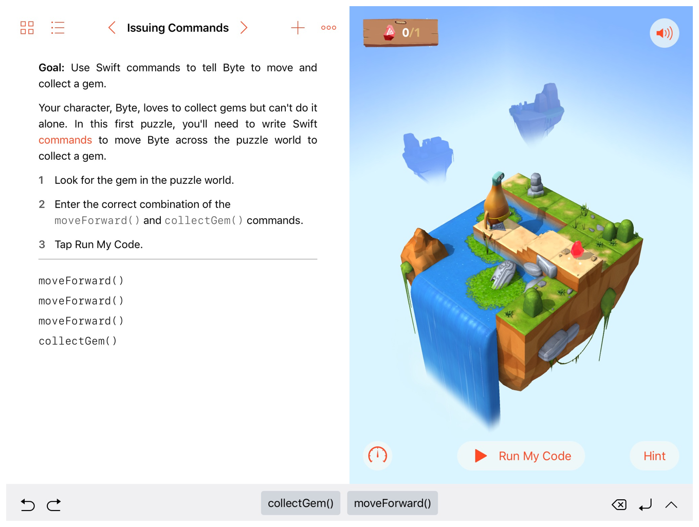

Playground Book Package
Playgroundブックパッケージ
With the playground book package format, you can create a document that includes features such as playground pages, live views containing iOS views, and animated cutscenes. Figure 1-1 shows a screenshot from Learn to Code 1.
playgroundブックパッケージ形式で、あなたは様々な機能、例えばplaygroundページ、iOSビューを入れたライブビュー、そしてアニメーションカットシーンなどを含む文書を作成できます。図 1-1は、「コードを学ぶ１」からのスクリーンショットを示します。
図 1-1 「コードを学ぶ 1」 
Content Hierarchy
コンテンツ階層
A playground book is a package—a type of document with a file and folder structure. The parts of a book package form a nested hierarchy of folders. At the top is the book, then the chapters, and finally the individual pages and their content. The books, chapters, and pages include manifest information and optional items shared between the book, chapter, or page. Figure 1-2 shows the general hierarchy of files and folders for the playground book package format.
playgroundブックは、パッケージ — ファイルとフォルダ構造を持つ文書のひとつの型式です。ブックパッケージの各部分は、入れ子のフォルダ階層を形成します。一番上にはそのブックが、それから章、そして最終的に個々のベージとそれらの内容になります。ブック、章、そしてページは、マニフェスト情報および、ブック、章、またはページ間で共有される任意の項目を含みます。図 1-2は、playgroundブックパッケージ形式のためのファイルとフォルダの一般的な階層を示します。
図 1-2 パッケージフォルダ階層

The package format uses a combination of folder name extensions, specially named folders, and specially named files. Manifest files for a book, and for each chapter and page, contain configuration information such as the order of chapters or the name of a page.
このパーケージ形式は、フォルダ名拡張子、特有名前フォルダ、そして特有名前ファイルの組み合わせを使います。あるブックのマニフェストファイル、そして各章およびページは、章の順序やページの名前といった構成情報を含みます。
Folder Name Extensions
フォルダ名拡張子
The book package, chapters, and pages use folder name extensions to indicate their type. Table 1-1 describes the folder name extensions and lists their locations in the hierarchy.
ブックパッケージ、章、そしてページは、フォルダ名拡張子を使ってそれらの型を指し示します。表 1-1は、フォルダ名拡張子を記述して、それらの階層中の位置を一覧にします。
Extension
|
Level
|
Description
|
|---|---|---|
|
Book
|
The top-level folder for the playground book
|
|
Chapter
|
A chapter in the book
|
|
Page
|
An individual page containing a playground and an optional, always-on live view
|
|
Page
|
An individual page containing a cutscene
|
Folders in the Package Structure
パッケージ構造の中のフォルダ
The package structure consists of specially named folders with no folder name extensions. These folders contain the book, the chapters in the book, and the pages in each chapter. Table 1-2 describes the folders in the package structure and lists the containing folder for each.
パッケージ構造は、名前拡張子を持たない特有名前フォルダから成ります。これらのフォルダは、ブック、そのブックの中の章、そして章の中のいくらかのページを含みます。表 1-2は、パッケージ構造の中のフォルダを記述して、それぞれに含まれているフォルダを一覧にします。
Folder name
|
Containing folder
|
Description
|
|---|---|---|
|
The top-level |
Contains all the other files and folders for the playground book
|
|
|
Contains all the chapter folders for the book
|
|
|
Contains all the page folders for the chapter
|
Shared Code Folders
共有コードフォルダ
Shared code is stored in folders named Sources. The contents of the folders are shared by the level in the hierarchy at which they are defined and all levels below that. For example, code in the Sources folder at the book level is available to all chapters and pages, whereas code in the Sources folder at the chapter level is available to all pages in that chapter but not to any other chapter.
共有コードは、Sourcesと名前のつけられるフォルダに格納されます。それらフォルダの内容は、そこでそれらが定義される階層の中のそのレベルおよびそれより下の全てのレベルによって共有されます。例えば、ブックレベルでのSourcesフォルダの中のコードは、全ての章とページで利用可能です、それに対して章レベルでのSourcesフォルダの中のコードは、その章の中の全てのページで利用可能です、しかし何であれ他の章にはそうでありません。
Table 1-3 describes the shared code folder names and lists their containing folders.
表 1-3 は、共有コードフォルダ名を記述して、それらが含んでいるフォルダを一覧にします。
Public and Private Resources Folders
パブリックおよびプライベートリソースフォルダ
Resources, such as images, sounds, and text files, are stored in specially named folders with no folder name extensions. Any resources that you want users to be able to access from the file picker or image picker go in a PublicResources folder. Any resources that you don’t want users to access, such as localization or hints files, go in a PrivateResources folder.
リソース、例えば画像、サウンド、そしてテキストファイルなどは、名前拡張子を持たないいくらかの特有名前フォルダに格納されます。ユーザがファイルピッカーまたはイメージピッカーからアクセス可能であるのをあなたが望むあらゆるリソースは、PublicResourcesフォルダにしまいます。ユーザがアクセスするのをあなたが望まないあらゆるリソース、例えばローカライズまたはヒントファイルは、PrivateResourcesフォルダにしまいます。
Like shared code folders, the contents of resource folders are shared by the level in the hierarchy at which they are defined and all levels below that. When page content references a resource by name, it consults the PublicResources and PrivateResources folders at the page, chapter, and book levels, resolving in the following ways:
共有コードフォルダのように、リソースフォルダの内容は、それでそれらが定義される階層の中のレベルとその下の全てのレベルで共有されます。ページ内容があるリソースを名前によって参照する場合、それはページ、章、そしてブックレベルでのPublicResourcesとPrivateResourcesフォルダに相談して、以下の方法で解決します：
If a page, chapter, or book has a resource with the same name in both the
PublicResourcesand thePrivateResourcesfolders, the resource in thePublicResourcesfolder is used.
ページ、章、またはブックがPublicResourcesとPrivateResourcesフォルダとの両方において同じ名前でリソースを持つならば、PublicResourcesフォルダのリソースが使われます。If a page has a resource with the same name as its containing chapter, or a chapter has a resource with the same name as its containing book, the resource associated with the higher level is used.
あるページがそれを含んでいる章と同じ名前どリソースを持つ、またはある章がそれを含んでいるブックと同じ名前でリソースを持つならば、より高いレベルと結び付けられたリソースが使われます。
Table 1-3 describes the resources folder names and lists their containing folders.
表 1-3 は、リソースフォルダ名を記述して、それらが含んでいるフォルダを一覧にします。
Folder name
|
Containing folders
|
Description
|
|---|---|---|
|
|
A folder containing public resources, such as images and text files
|
|
|
A folder containing private resources, such as images, text files, hints, and localization files
|
Localized Resources Folders
ローカライズリソースフォルダ
Localized resources are stored in folders named with a locale identifier and the .lproj folder name extension. For example, resources for English-speaking users go in en.lproj folders, and resources for French-speaking users go in fr.lproj folders.
ローカライズリソースフォルダは、ロケール識別子と.lprojフォルダ名拡張子で名前を付けられるフォルダに格納されます。例えば、英語を話すユーザのためのリソースはen.lprojフォルダにしまいます、そしてフランス語を話すユーザのためのリソースはfr.lprojフォルダにしまいます。
Table 1-5 describes the folder name extension and lists its locations in the hierarchy.
表 1-5は、フォルダ名拡張子を記述して、階層におけるそれの位置を一覧にします。
Specially Named Files
特有名前ファイル
Configuration information, playground contents, and the source code for always-on live views are in specially named files.
構成情報、いくらかのプレイグラウンド内容、そして常時接続のライブビューのためのソースコードは、特有名前ファイルの中に入れます。
Table 1-6 describes the specially named files and lists their containing folders.
表 1-6 は、特有名前ファイルを記述して、それらを含んでいるフォルダを一覧にします。
File name
|
Containing folders
|
Description
|
|---|---|---|
|
|
A property list that defines the attributes for a book, chapter, or page
|
|
|
A required file with the initial contents of the playground page
|
|
|
An optional file used to specify an always-on live view; the code in this file is executed when the page is opened
|
Creating Playground Books
プレイグラウンドブックを作成する
You need to use both a Mac running Xcode and an iPad to create a playground book. The first step in development is creating a skeleton structure for the book. A simple approach is to start with an existing playground book, which you can get by downloading Starter.playgroundbook from the Apple developer website.
あなたは、Xcodeが動作するMacおよびiPadの両方がプレイグラウンドブックを作成するために必要です。開発における第一段階は、ブックのための骨組構造を作成することです。簡単なアプローチは、既存のプレイグラウンドブックで始めることです、それはあなたがStarter.playgroundbookをApple開発者ウェブサイトからダウンロードすることによって取得できます。
Any changes to a book, such as adding a new page, require modifying content files, manifest files, and the folder structure. Changes made to a book in Swift Playgrounds, such as entering code into an editable text field, do not change the underlying pages. The suggested workflow is:
ブックに対するあらゆる変更、例えば新しいページの追加などは、内容ファイル、マニフェストファイル、そしてフォルダ構造の修正を必要とします。ブックに対してSwift Playgroundsの中で行われた変更、例えば編集可能なテキストフィールドへのコード入力などは、その下にあるページを変更しません。お勧めするワークフローは：
Make targeted changes to the book’s content and structure in Xcode
目的とする変更をブックの内容と構造に対してXcodeにおいて行うTransfer the updated book into Swift Playgrounds using iCloud or AirDrop
更新されたブックをSwift PlaygroundsへiCloudまたはAirDropを使って転送するOpen the updated book and test the changes
更新されたブックを開いて変更をテストするNote any additional changes that are needed, and return to step 1
必要とされる追加の変更を書き留めて、手順１に戻る
Copyright © 2017 Apple Inc. All rights reserved. Terms of Use | Privacy Policy | Updated: 2017-11-13